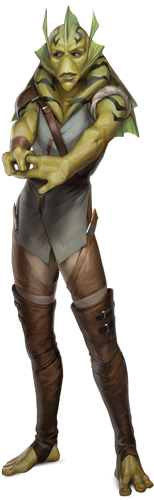

Kalleran
kalleran
Special Abilities: Kallerans begin the game with one rank in Streetwise. They still may not train Streetwise above rank 2 during character creation.
Hypersensitive Antennae: : Kallerans begin the game with the Heightened Awareness talent .
Descended from a semi-amphibious stock, Kallerans are a lesser-known species, native to an isolated world in the Outer Rim. Though Kaller was a battleground during the Clone Wars, neither the planet nor its people ever achieved prominence on a galactic scale. This is partly because the species has never been united under a single governing body to pursue expansion beyond Kaller’s orbit. Further, extraplanetary invaders have occupied parts of Kaller on multiple occasions throughout the last few thousand years, limiting the Kallerans’ ability to expand their own culture across the stars as they grappled with the influence of colonizers. From the Republic of old to the Pykes to the Mandalorians, many different powerful groups across history have had a hand in shaping Kaller— some as economic partners and allies, but more as cruel oppressors of the regions they controlled. Other parts of the planet, especially resource-poor regions, have largely been ignored by colonizers and have been ruled by Kallerans as far back as history records. While no single group of outsiders has directly governed a majority of Kaller, many different species and cultures with wide galactic influence have a stake in the world’s economic prospects.
Kaller’s location and its natural resources have both made the world an important target for other groups’ military and economic expansionism. The system sits at the intersection of three different hyperspace routes. This has made it a convenient layover point for obtaining repairs, transferring cargo, and refueling between legs of an extended journey. Plateau City, Kaller’s preeminent and surprisingly cosmopolitan spaceport, was built long ago by foreign interests to handle the sheer volume of freighters visiting the planet. A variety of different rare minerals and the surprisingly resilient hardwood from the kailnut tree remain valuable exports, and the industries around these and other products drive much of the Kalleran economy to this day.
For their part, local Kalleran governments continue to use the influence of outsiders to their advantage whenever they can, pitting these groups against each other and homegrown rivals. While some Kalleran cultures and governments have feuds with particular groups of settlers, others are far more invested in their conflicts with local groups. However, because of the numerous galactic societies with an interest in Kaller and its resources, Kaller has never been ruled by a single alliance of Kallerans.
Seeking the stability that they cannot find on their homeworld, many Kallerans have taken to traveling far from the Kaller system, pursuing their fortunes beyond its boundaries. Their independent tendencies and knack for self-sufficiency often serve them well in their tasks as they travel. Some find careers working for others in a variety of fields. Others, however, earn reputations as independent contractors, or as masters in a broad range of different fields. For these Kallerans, their starships become their true homes of choice
Adult Kallerans average over two meters in height, standing eye to eye with a Wookiee. They are slim for their height, though their physiques tend to be flexible rather than spindly. Kalleran feet and hands each have three fully prehensile digits, arranged in a radial manner. They do not normally wear shoes, preferring not to restrict their ability to grasp with their feet. Their green skin often has distinctive black markings, which vary in pattern by individual.
Kallerans are not capable of respiration under water, but retain one key holdover of their amphibious ancestry, as they breathe through their skin as well as their lungs. While they do have lungs, a significant portion of their respiration occurs directly through their skin, freely drawing oxygen from the atmosphere while releasing carbon dioxide. A consequence of this respiratory system is that Kallerans must consume more water than other species of comparable size. Kallerans do not have noses, as there is no need for them to be able to breathe while chewing.
Kallerans have antennae that move in an animated fashion as they carry on conversation. These are often used to add emotional emphasis to particular points of discussion. The antennae are also sensory organs for the species. These are their primary olfactory receptors, as well as the secondary aural receptors. The fin-like structures located atop and to the sides of the head also augment a Kalleran’s sense of hearing, providing extended surfaces to detect sounds.
Kallerans have a higher muscle density than most humans, but oddly, they are also more susceptible to harm. As a Kalleran’s skin is a key breathing organ, damage to the skin can leave a Kalleran substantially weakened even if internal organs are unaffected. As a result, Kalleran combat techniques tend to put an even higher premium on avoidance, redirection, and use of their flexibility to entrap foes than other, similar styles.
Kalleran society places great value on personal achievement, and has much less interest in collectivism than many other cultures. Kaller has no history of acting as a united whole, and many galactic organizations hold some influence on Kaller, so few Kallerans join ideologically driven causes like the Rebellion (or Empire).
A temperate and arid world in the Outer Rim, Kaller is the native homeworld of the Kalleran species. Its binary star system has led to a complex system of seasonal weather variation, dependent upon its location in its orbit relative to the two suns. Seemingly mild conditions transition over a period of just a few days into more extreme conditions with little warning to those unfamiliar with Kaller’s weather
Kallers indigenous communities are located near surface water—typically rivers—for convenient access to fresh water. Their traditional architectural styles are well rounded and depend upon stone construction—now replaced with duracrete in larger cities—to provide protection from the extreme weather conditions. Most of their cities are small, with populations of no more than a few hundred thousand.
The Confederacy of Independent Systems conquered Kaller during the Clone Wars, due to the system’s overall utility. The Grand Army of the Republic freed Kaller during the waning days of the war. In short order, it came under control of the Galactic Empire. However, there is no standing Imperial military presence in the system, and the Empire takes little interest in this world, seeing it as innocuous and inconsequential
Practically all Kallerans on Kaller speak one of the many local languages that Imperial xenolinguists lump into a group called “Kall.” Almost all learn Basic as well, and many learn several other languages of the groups who have settled on Kaller, depending on their native region. Languages developed on Kaller depend upon antennae movements to denote degree of emphasis. This leads to the characteristic antennae movement that Kallerans exhibit when speaking Basic. Because antennae movement is an integral part of all Kall dialects, it is difficult for most other species to master. Further, those movements offer a degree of silent communication between its native speakers. Kallerans who need to speak to one another in silence may do so as long as their antennae are visible to one another, though the vocabulary of a silent discussion is limited. Part of the resilience of these native languages may stem from the fact that many Kallerans have dealt with foreign oppression for generations, and a tongue that outsiders do not know is a useful tool for survival in such an environment.
Having dealt with other species for so long, Kallerans tend to acclimate quickly to new environments and are rarely bothered by the strange mannerisms of other species, but are slow to put their trust in new acquaintances. Their culture’s focus on self-reliance means that they are blunt when they feel a potential comrade is dead weight to the group—a trait that does not endear them to many, but also makes them difficult to exploit.
Alien invasions have been devastating and disruptive but, at times, their after-effects have been useful to the Kallerans. Certainly overlords and occupiers have cost the world resources and time, and have transformed the planet’s culture repeatedly. Other groups have brought new technologies and opportunities to Kaller. Most interactions with other cultures have been a bit of both, and some Kallerans have benefited while others have suffered.
Some of these conquerors have been overthrown by more humane interlopers, such as the Old Republic, but even groups not seeking to exploit the Kallerans still disrupted their society or introduced new challenges that the Kallerans have had to overcome. On the other hand, plagues have been stopped in their tracks by imported medicine, famines and catastrophes have been averted through economic alliances, incredible new technologies have been introduced, and tyrants like the Separatists have occasionally been expunged through military intervention of external forces like the Grand Army of the Republic. To say whether the presence of aliens on Kaller has done more evil than it has good is difficult, but it has undeniably affected the Kallerans in a lasting way.
To most Kallerans, the influence of outsiders is simply a fact of life, to be exploited for advantage when possible. Some alien species have had a presence on Kaller so long that few even remember how they came to inhabit the world, their enclaves as ancient as the oldest surviving Kalleran cities. Others are newcomers, arriving with new economic opportunities for the ambitious or posing new threats to established powers.
Thanks to their contact with members of countless other species, Kallerans from the more cosmopolitan parts of Kaller tend to put little stock in another person’s species as compared to their more rural cousins, whose contact with aliens may be much more limited.